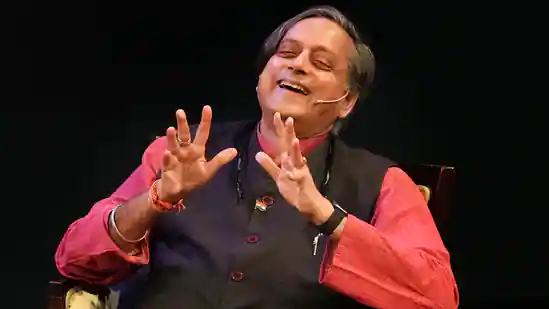

India News Updated on Nov 12, 2022 06:53 PM IST The Delhi chief minister said no party had the right to form a government if it could not provide education and healthcare.
Amid criticism over drainage issues, Stalin assured, “Everything is going well. There are issues. The public works department and authorities have been working together to tackle the concerns. With more rain being anticipated, work is being done, there is nothing to worry about." At one point, amid questions, he also asked: “Where is the water? Show me…” Multiple videos and visuals were shared on social media showing the waterlogged streets in Chennai and rest of Tamil Nadu as users questioned the authorities. As per the latest statement by the India Meteorological Department (IMD), a low-pressure area is likely to form over Southeast Bay of Bengal and neighbourhood later this week (around November 16). While downpour is expected across Tamil Nadu and Puducherry over the next five days, heavy rain was predicted on Sunday for most areas in the southern state.